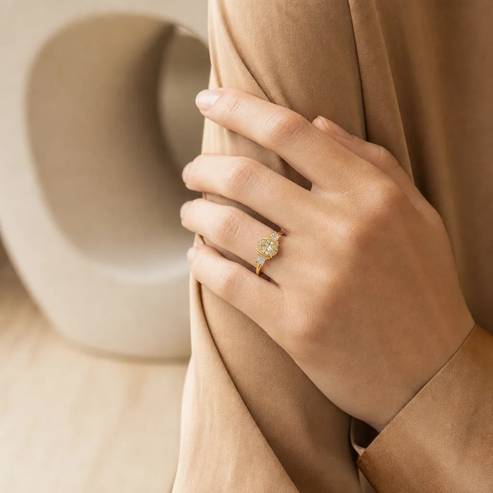

How a Morrow ring is made
From the first conversation to the final polish.

Every Morrow ring is made to order. Here is what happens between your first message and the day your ring arrives.
1. Conversation
It starts with your quote request or consultation. We talk about the design, the stone, the metal, your ring size and your budget.
2. Design and CAD
The design is refined in sketches and then built as a precise 3D model on the computer. This is where proportions, stone settings and band thickness are worked out to fractions of a millimetre.
3. Casting
The 3D model is printed and cast in your chosen metal using the lost-wax method, a technique jewellers have relied on for centuries.
4. Setting and finishing
The cast ring is cleaned up by hand, the stones are set, and the ring is polished. Each stage is checked before moving to the next.
5. Hallmarking
In the UK, gold and platinum jewellery above a small minimum weight must be hallmarked by an independent assay office before it can be sold as gold or platinum. The hallmark is your guarantee of the metal’s purity.
6. Your ring
Finally, your ring is packaged and sent to you, ready to be worn for a lifetime.
Ready to start? Choose a design or ask about bespoke.